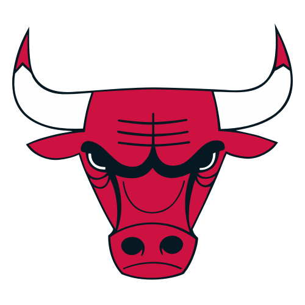

O Chicago Bulls é um time de basquete profissional americano sediado em Chicago, Illinois. Os Bulls competem na National Basketball Association (NBA) como um membro da Divisão Central da Conferência Leste da liga. A equipe foi fundada em 16 de janeiro de 1966 e jogou seu primeiro jogo durante a temporada de 1966-67. Os Bulls jogam seus jogos em casa no United Center, uma arena compartilhada com o Chicago Blackhawks da NHL.